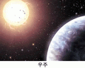

플라즈마
- 고체, 액체, 기체가 아닌 원자핵과 전자가 분리된 제4의 물질상태
- 우주의 99%는 플라즈마로 이루어짐
- 바이오기술(BT), 나노기술(NT), 정보기술(IT), 환경기술(ET), 우주기술(ST) 등 활용범위가 방대
- 플라즈마 발생에 따른 폐기물이 거의 없으며, 온실가스 및 공해오염 물질을 정화하는 데 이용가능
- 플라즈마의 예

응용분야
- 핵융합로 언저리 플라즈마
- 플라즈마와 가둠 벽 사이의 경계 플라즈마 연구
- MP2 중 디버터 시뮬레이터를 통해 핵융합로 건설에 필요한 기초 자료 생산
- 반도체 디스플레이 산업기술 분야
- 중성입자 빔을 이용한 반도체 제조 장비 기술
- 대기압 플라즈마를 이용한 TF-LCD 제조장비 기술
- 대기압 플라즈마를 이용한 반도체 패키징 세정 기술
- 에너지 기술 분야
- 수증기를 이용한 수소 제조 기술
- 투명한 태양 전지 제조 기술
- 환경 기술 분야
- 고농도 오존 발생 기술
- 무공해 농약 제조 기술
- 수도관 플라스틱 코팅 기술
- 바이오 기술 분야
- 중성입자 빔을 이용한 단백질 구조 분석 장비 기술
- 플라즈마 멸균 장비 기술
- 우주 항공 기술 분야
- 인공위성용 플라즈마 추진체 기술
- 우주항해용 플라즈마 추진체 기술
- 광학 기술 분야
- Hollow Cathode Plasma를 이용한 EUV 발생 기술
- 정보 기술(IT) 접목 과학 기술 분야
- Plasma Simulator Web 구현 기술
- Atomic and Molecular Database 구축 사업
국가핵융합연구소 플라즈마기술연구센터
전라북도 군산시 오식도동 814-2 | Tel : 063-440-4213 | Fax : 042-879-6983